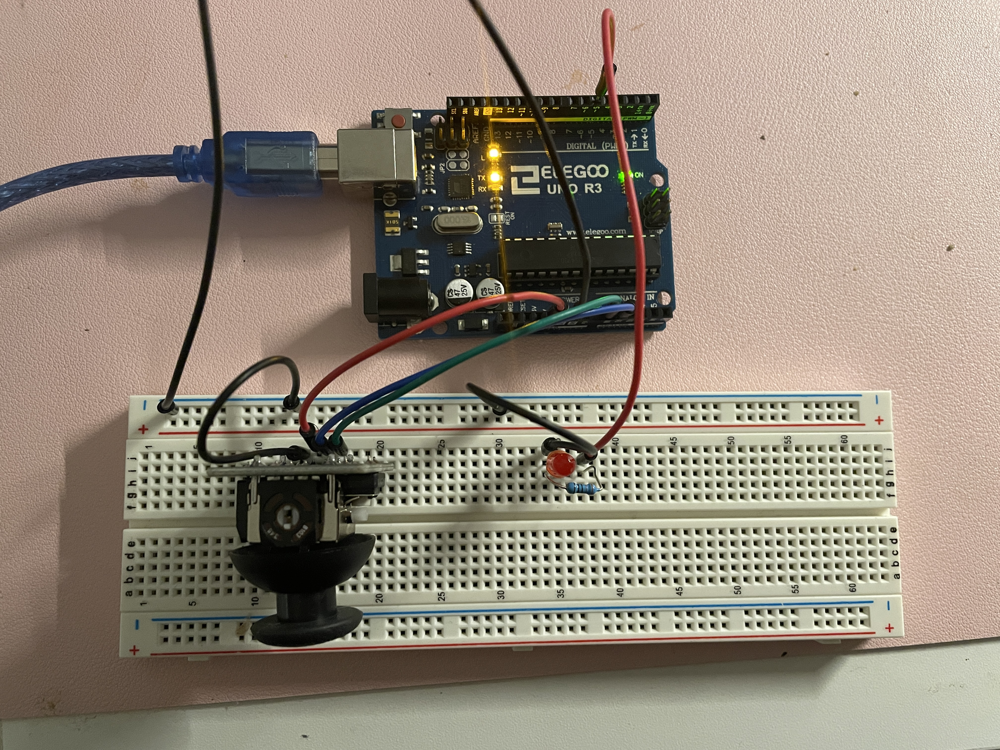

Assignment 4: Libraries!
Here is all the documentation for assignment 4, including:
- Circuit Operation
- Schematic
- Circuit
- Firmware

The gif above shows the circuit operation. As the joystick is moved, the circle on the screen moves along with it. When the keyboard is pressed the LED turns on. When the keyboard is released, the LED turns off.
Schematic:

Circuit:

I used a red LED which needs a resistor in order to prevent burn out. The following math shows the minimum size of the resistor. V = I*R 5 V - 1.8 V = 20 mA * R R = 3.2 V / 20 mA = 160 ohms I used a 330 ohm resistor so that the red LED was less bright.
Firmware: Thank you to Emma Drapp for helping me with the serial port. Also shout out to Mileena Ros who previously took this course for helping me with the code.
Arduino:
void setup() {
// put your setup code here, to run once:
Serial.begin(9600); // initialize serial communication
Serial.setTimeout(10); // set the timeout for parseInt
pinMode(A0, INPUT); // joystick x val
pinMode(A1, INPUT); // joystick y val
pinMode(5, OUTPUT); // red led
}
void loop() {
if (Serial.available() > 0) { // if there is serial data
int inByte = Serial.read(); // read the serial data
// Serial.write(inByte);
analogWrite(5, inByte); // write inByte to led
}
int s1 = analogRead(A0); // read x val of joystick
int s2 = analogRead(A1); // read y val of joystick
Serial.print("[");
Serial.print(s1);
Serial.print(",");
Serial.print(s2);
Serial.println("]"); // print to serial as an array
}
Sketch.js:
var serial; // variable to hold an instance of the serialport library
var portName = '/dev/cu.usbmodem14301' // rename to the name of your port
var dataArray = []; // some data coming in over serial
function setup() {
serial = new p5.SerialPort(); // make a new instance of the serialport library
serial.on('list', printList); // set a callback function for the serialport list event
serial.on('connected', serverConnected); // callback for connecting to the server
serial.on('open', portOpen); // callback for the port opening
serial.on('data', serialEvent); // callback for when new data arrives
serial.on('error', serialError); // callback for errors
serial.on('close', portClose); // callback for the port closing
serial.list(); // list the serial ports
serial.open(portName); // open a serial port
createCanvas(windowWidth, windowHeight);
background(0x08, 0x16, 0x40);
}
// get the list of ports:
function printList(portList) {
// portList is an array of serial port names
for (var i = 0; i < portList.length; i++) {
// display the list the console:
print(i + " " + portList[i]);
}
}
function serverConnected() {
print('Connected to server.');
}
function portOpen() {
print('The serial port opened.')
}
function serialError(err) {
print('Something went wrong with the serial port: ' + err);
}
function portClose() {
print('The serial port closed.');
}
function serialEvent() {
if (serial.available()) {
var datastring = serial.readLine(); // read in some serial
var newarray;
try {
newarray = JSON.parse(datastring); // can we parse the serial
} catch(err) {
///console.log(err);
}
if (typeof(newarray) == 'object') {
dataArray = newarray;
}
console.log("Got back " + datastring);
}
}
// while any key is pressed led will turn on at max brightness (255)
function keyPressed() {
serial.write(255);
}
// when any key is released led will turn off (0)
function keyReleased() {
serial.write(0);
}
function draw() {
background(0,0,0); // set background color
noStroke(); // remove border
xPos = map(dataArray[0], 0, 1023, 0, width); // map x val of joystick to width of window
yPos = map(dataArray[1], 0, 1023, 0, height); // map y val of joystick to height of window
fill(255);
// circle(mouseX, mouseY, 50);
circle(xPos, yPos, 50); // draw circle at mapped x and y vals based on joystick input
}